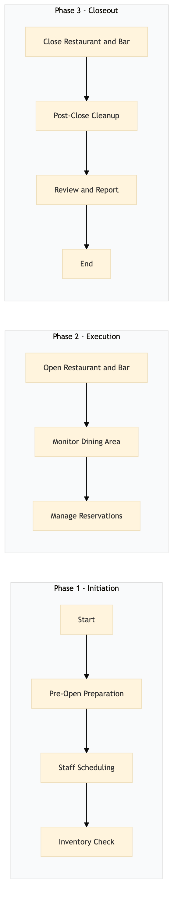

| Role | Steps |
|---|---|
| Executive Housekeeper | 1.1 2.2 3.2 |
| Front Desk Agent | 1.2 2.1 3.1 |
| Food & Beverage Manager | 1.3 2.3 3.3 |
| Revenue Manager | 1.2 2.3 3.3 |
| Step | Name | Role | System | Input | Output | KPI | Dec? | Exc? | Pain Point / Risk |
|---|---|---|---|---|---|---|---|---|---|
| 1.1 | Pre-Open Preparation | Executive Housekeeper | Oracle OPERA Cloud, Knowcross HotSOS | Cleaning checklist, inventory list | Clean and stocked dining area | Completion time less than 30 minutes | N | Y | Ensuring all areas are spotless before opening. |
| 1.2 | Staff Scheduling | Front Desk Agent, Revenue Manager | SynXis CRS, Oracle OPERA Cloud | Daily schedule template | Scheduled staff list for the day | Less than 5 minutes per shift adjustment | Y | N | Balancing staffing needs with budget constraints. |
| 1.3 | Inventory Check | Executive Housekeeper, Food & Beverage Manager | Oracle MICROS Simphony, Birchstreet Procurement | Stock levels, menu items | Updated inventory report | Completion within 15 minutes | N | Y | Accurate tracking of perishable goods. |
| 2.1 | Open Restaurant and Bar | Front Desk Agent, Food & Beverage Manager | Oracle OPERA Cloud, Amadeus Delphi.fdc | Opening time, reservation list | Opened restaurant and bar with reservations ready | Less than 10 minutes | N | Y | Handling last-minute changes in reservations. |
| 2.2 | Monitor Dining Area | Executive Housekeeper, Food & Beverage Staff | Oracle OPERA Cloud, Honeywell INNCOM | Dining area status updates | Clean and orderly dining environment | Continuous monitoring with less than 1 minute intervals | Y | N | Maintaining cleanliness during peak hours. |
| 2.3 | Manage Reservations | Front Desk Agent, Revenue Manager | Oracle OPERA Cloud, IDeaS G3 RMS | Reservation requests, availability | Confirmed or declined reservations | Less than 2 minutes per reservation | Y | N | Handling high demand for reservations. |
| 3.1 | Close Restaurant and Bar | Front Desk Agent, Food & Beverage Manager | Oracle OPERA Cloud, Amadeus Delphi.fdc | Closing time, final reservations | Closed restaurant and bar with all guests served | Less than 15 minutes | N | Y | Ensuring no reservations are missed. |
| 3.2 | Post-Close Cleanup | Executive Housekeeper, Food & Beverage Staff | Oracle OPERA Cloud, Knowcross HotSOS | Dining area status, inventory levels | Clean and stocked dining area for the next day | Completion within 30 minutes | N | Y | Efficiently cleaning up after a busy day. |
| 3.3 | Review and Report | Food & Beverage Manager, Revenue Manager | Oracle OPERA Cloud, Microsoft Power BI | Sales data, customer feedback | Daily operational report | Completion within 1 hour | Y | N | Analyzing large volumes of data for insights. |
Operational process for managing all-day dining operations at a full-service Marriott hotel, ensuring smooth service and efficient use of resources.